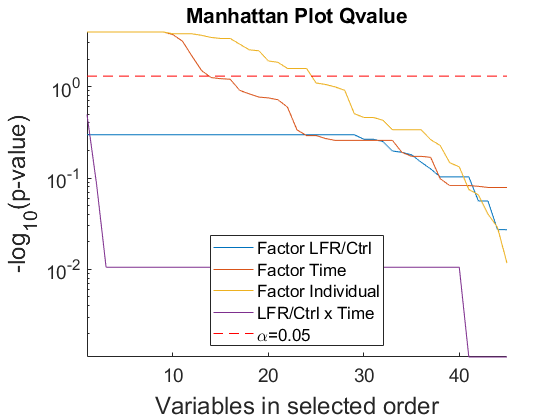
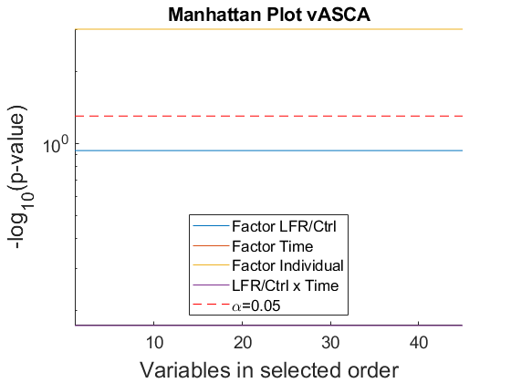
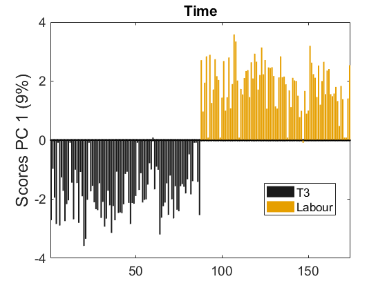
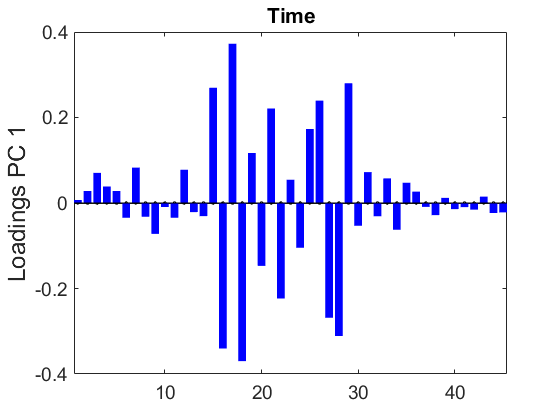
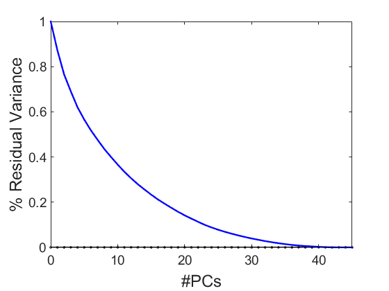
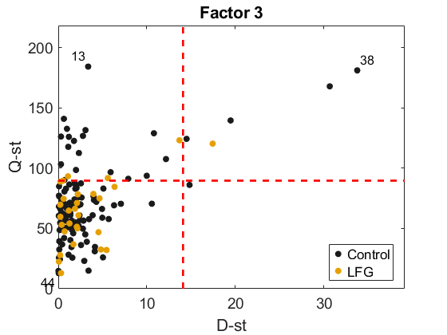

Ferrer et al. INTESTINAL MICROBIOTA INFLAMMATORY PROFILE IN LATE-FETAL GROWTH RESTRICTION WOMEN, 2025.
Script to analyze bacterial data
We consider the following model:
X = A + B + C(A) + AB + E
with A: Class (Control vs IUGR), B: Time (T3, Labour), C(A): Individual
Software preparation: Install MEDA-Toolbox v1.14
coded by: Jose Camacho (josecamacho@ugr.es) last modification: 13/Jul/2026
Copyright (C) 2026 University of Granada, Granada
This program is free software: you can redistribute it and/or modify it under the terms of the GNU General Public License as published by the Free Software Foundation, either version 3 of the License, or (at your option) any later version.
This program is distributed in the hope that it will be useful, but WITHOUT ANY WARRANTY; without even the implied warranty of MERCHANTABILITY or FITNESS FOR A PARTICULAR PURPOSE. See the GNU General Public License for more details.
You should have received a copy of the GNU General Public License along with this program. If not, see http://www.gnu.org/licenses/.
Contents
Prepare data
clear close all clc % comment the line below to observe full randomness rng(0); % we fix the random seed for repetitivity, but permutation testing is stochastic so a little variability is expected in the p-values and associated figures pvalue = 0.05 load bacteria_vasca.mat X = X_ASCAt; Xraw = X; F = F_ASCA; for i=1:length(var_final), var_l{i} = char(var_final(i)); end ind = find(F(:,2)==3);% do not consider newborns X(ind,:) = []; Xraw(ind,:) = []; F(ind,:) = []; ind = find(F(:,2)==4);% do not consider newborns X(ind,:) = []; Xraw(ind,:) = []; F(ind,:) = []; Xr = rankTransform(X); Xn = X; Xn(find(isnan(X)))=0; Xrn = X; Xrn(find(isnan(X)))=0; X = [X Xr]; % Careful: use [X/norm(Xn) Xr/norm(Xrn)] if not autoscaled for i=1:length(var_final), var_l{end+1} = strcat(var_l{i},'-RT'); end clear X_ASCAt F_ASCA var_final Xr Xn Xrn
pvalue =
0.0500
FDR (Q-value)
[T, parglmoMC] = parglmMC(X, F, 'Model', [1 2], 'Mtc', -1, 'Nested', [1 3], 'Random', [0 0 1]); T.Source(1:4)={'F1: LFR/Ctrl','F2: Time','F3: Individual','Int Class x Time'}
T =
6×7 table
Source SumSq AvPercSumSq df MeanSq MaxF minPvalue
____________________ ______ ___________ ___ ______ ______ __________
{'F1: LFR/Ctrl' } 203.03 1.5905 1 203.03 14.368 0.184
{'F2: Time' } 1225.7 9.602 1 1225.7 225.21 5.5555e-05
{'F3: Individual' } 7245.5 56.759 85 85.241 6.0625 4.9999e-05
{'Int Class x Time'} 67.473 0.52856 1 67.473 12.238 0.59299
{'Residuals' } 4094.5 32.075 85 48.17 NaN NaN
{'Total' } 12765 100.55 173 73.788 NaN NaN
Compare with after rank tranform (if similar, raw data preferred)
half = length(var_l)/2; noTr = 1:half; Tr = half+1:2*half; diff1 = find( (parglmoMC.p(noTr,1)<pvalue | parglmoMC.p(Tr,1)<pvalue) & abs(parglmoMC.p(noTr,1)-parglmoMC.p(Tr,1)) > pvalue); if length(diff1)>0, disp('Check the following variables in Factor 1:'), end disp(var_l(diff1)) diff2 = find( (parglmoMC.p(noTr,2)<pvalue | parglmoMC.p(Tr,2)<pvalue) & abs(parglmoMC.p(noTr,2)-parglmoMC.p(Tr,2)) > pvalue); if length(diff2)>0, disp('Check the following variables in Factor 2:'), end disp(var_l(diff2)) diff4 = find( (parglmoMC.p(noTr,4)<pvalue | parglmoMC.p(Tr,4)<pvalue) & abs(parglmoMC.p(noTr,4)-parglmoMC.p(Tr,4)) > pvalue); if length(diff4)>0, disp('Check the following variables in the Interaction:'), end; disp(var_l(diff4)) X2 = X(:,noTr); var_l2 = var_l(noTr); if length(diff1)==0 && length(diff2)==0 && length(diff4)==0 disp('Rank transformation does not make a difference, so we are safe to use the original data.'); else disp('We use the rank tranformation for the Q-value of non-normal variables.'); parglmoMC.p(unique([diff1;diff2;diff4]),:) = parglmoMC.p(unique([diff1;diff2;diff4])+half,:); X2(:,unique([diff1;diff2;diff4])) = X(:,unique([diff1;diff2;diff4])+half); var_l2(unique([diff1;diff2;diff4])) = var_l(unique([diff1;diff2;diff4])+half); end
Rank transformation does not make a difference, so we are safe to use the original data.
Univariate inference: Q-value with selected features
[T, parglmoMC] = parglmMC(X2, F, 'Model', [1 2], 'Mtc', -1, 'Nested', [1 3], 'Random', [0 0 1]); T.Source(1:4)={'F1: LFR/Ctrl','F2: Time','F3: Individual','Int LFR/Ctrl x Time'} TQ = table(var_l2', parglmoMC.p(:,1), parglmoMC.p(:,2), parglmoMC.p(:,4),'VariableNames', {'Labels','QvalueLFRCtrl','QvalueTime','QvalueInt'}) h=figure; hold on for factor=1:3 plot(-log10(parglmoMC.p(parglmoMC.ordFactors(factor,:),factor))) end plot(-log10(parglmoMC.p(parglmoMC.ordInteractions(1,:),4))) plot([1 size(X2,2)],-log10([pvalue pvalue]),'r--') legend('Factor LFR/Ctrl','Factor Time','Factor Individual','LFR/Ctrl x Time','\alpha=0.05','Location','south') a=get(h,'CurrentAxes'); set(a,'FontSize',14) set(a,'YScale','log') ylabel('-log_{10}(p-value)','FontSize',18) xlabel('Variables in selected order','FontSize',18) title('Manhattan Plot Qvalue') axis tight
T =
6×7 table
Source SumSq AvPercSumSq df MeanSq MaxF minPvalue
_______________________ ______ ___________ ___ ______ ______ __________
{'F1: LFR/Ctrl' } 93.164 1.4603 1 93.164 8.6807 0.50423
{'F2: Time' } 577 9.0444 1 577 209.65 0.00011111
{'F3: Individual' } 3650.3 57.218 85 42.945 5.7026 0.00011111
{'Int LFR/Ctrl x Time'} 31.763 0.49789 1 31.763 12.238 0.31999
{'Residuals' } 2061.6 32.315 85 24.254 NaN NaN
{'Total' } 6379.6 100.54 173 36.876 NaN NaN
TQ =
45×4 table
Labels QvalueLFRCtrl QvalueTime QvalueInt
______________________________________ _____________ __________ _________
{'f-Christensenellaceae;g--' } 0.50423 0.834 0.99747
{'f-Clostridiaceae;g-Clostridium' } 0.50423 0.55238 0.97595
{'f-Enterobacteriaceae;g--' } 0.66179 0.1774 0.97595
{'f-Erysipelotrichaceae;g--' } 0.50423 0.51159 0.97595
{'f-Lachnospiraceae;g-Clostridium' } 0.50423 0.55238 0.97595
{'f-Lachnospiraceae;g-Ruminococcus' } 0.50423 0.55238 0.97595
{'f-Lachnospiraceae;g-[Ruminococcus]'} 0.50423 0.12347 0.99747
{'f-Lachnospiraceae;g--' } 0.54312 0.55238 0.97595
{'f-Pasteurellaceae;g--' } 0.78903 0.14733 0.97595
{'f-Rikenellaceae;g--' } 0.63444 0.82965 0.97595
{'f-Ruminococcaceae;g-Ruminococcus' } 0.50423 0.55238 0.97595
{'f-Ruminococcaceae;g--' } 0.50423 0.062561 0.97595
{'f-[Barnesiellaceae];g--' } 0.87879 0.67201 0.97595
{'g-Actinobacillus' } 0.50423 0.55238 0.97595
{'g-Akkermansia' } 0.50423 0.00011111 0.97595
{'g-Alistipes' } 0.50423 0.00011111 0.97595
{'g-Anaerostipes' } 0.5613 0.00011111 0.97595
{'g-Bacteroides' } 0.50423 0.00011111 0.97595
{'g-Barnesiella' } 0.70951 0.031692 0.97595
{'g-Bifidobacterium' } 0.78903 0.0070832 0.97595
{'g-Bilophila' } 0.54312 0.0002 0.97595
{'g-Blautia' } 0.50423 0.00011111 0.97595
{'g-Collinsella' } 0.50423 0.46103 0.97595
{'g-Coprococcus' } 0.50423 0.05557 0.31999
{'g-Dialister' } 0.64452 0.00072726 0.97595
{'g-Dorea' } 0.78903 0.00011111 0.99747
{'g-Faecalibacterium' } 0.50423 0.00011111 0.97595
{'g-Gemmiger' } 0.50423 0.00011111 0.97595
{'g-Kocuria' } 0.93933 0.00011111 0.97595
{'g-Lachnospira' } 0.78903 0.51159 0.97595
{'g-Odoribacter' } 0.50423 0.25386 0.97595
{'g-Oscillospira' } 0.93909 0.53699 0.97595
{'g-Parabacteroides' } 0.50423 0.19109 0.97595
{'g-Paraprevotella' } 0.50423 0.060265 0.97595
{'g-Phascolarctobacterium' } 0.87879 0.17058 0.97595
{'g-Prevotella' } 0.50423 0.55238 0.82048
{'g-Pseudomonas' } 0.50423 0.834 0.97595
{'g-Roseburia' } 0.74866 0.64507 0.97595
{'g-Staphylococcus' } 0.50423 0.82669 0.97595
{'g-Streptococcus' } 0.50423 0.82669 0.99747
{'g-Subdoligranulum' } 0.50423 0.834 0.97595
{'g-Sutterella' } 0.50423 0.79753 0.99747
{'g-Veillonella' } 0.50423 0.82669 0.97595
{'o-Clostridiales;f-;g--' } 0.50423 0.67201 0.97595
{'o-RF;f-;g--' } 0.50423 0.67877 0.97595

Multivariate inference: ASCA
[T, parglmo] = parglm(X2, F, 'Model', [1 2], 'Nested', [1 3], 'Random', [0 0 1]); T.Source(1:4)={'F1: LFR/Ctrl','F2: Time','F3: Individual','Int LFR/Ctrl x Time'}
T =
6×7 table
Source SumSq PercSumSq df MeanSq F Pvalue
_______________________ ______ _________ ___ ______ ______ ________
{'F1: LFR/Ctrl' } 93.164 1.4603 1 93.164 2.1694 0.12088
{'F2: Time' } 577 9.0444 1 577 23.79 0.000999
{'F3: Individual' } 3650.3 57.218 85 42.945 1.7706 0.000999
{'Int LFR/Ctrl x Time'} 31.763 0.49789 1 31.763 1.3096 0.71828
{'Residuals' } 2061.6 32.315 85 24.254 NaN NaN
{'Total' } 6379.6 100.54 173 36.876 NaN NaN
Multivariate inference with variable selection: VASCA
[T, parglmoVS] = parglmVS(X2, F, 'Model', [1 2], 'Nested', [1 3], 'Random', [0 0 1], 'Select', 'FirstPeakInverse'); T.Source(1:4)={'F1: LFR/Ctrl','F2: Time','F3: Individual','Int LFR/Ctrl x Time'} TtQ = table(var_l2', parglmoVS.p(:,1), parglmoVS.p(:,2), parglmoVS.p(:,4),'VariableNames', {'Labels','VASCALFRCtrl','VASCATime','VASCAInt'}) h=figure; hold on for factor=1:3 plot(-log10(parglmoVS.p(parglmoVS.ordFactors(factor,:),factor))) end plot(-log10(parglmoVS.p(parglmoVS.ordInteractions(1,:),4))) plot([1 size(X2,2)],-log10([pvalue pvalue]),'r--') legend('Factor LFR/Ctrl','Factor Time','Factor Individual','LFR/Ctrl x Time','\alpha=0.05','Location','south') a=get(h,'CurrentAxes'); set(a,'FontSize',14) set(a,'YScale','log') ylabel('-log_{10}(p-value)','FontSize',18) xlabel('Variables in selected order','FontSize',18) title('Manhattan Plot vASCA') axis tight
T =
6×7 table
Source SumSq AvPercSumSq df MeanSq MaxF minPvalue
_______________________ ______ ___________ ___ ______ ______ _________
{'F1: LFR/Ctrl' } 93.164 1.4533 1 93.164 8.6807 0.11688
{'F2: Time' } 577 9.0669 1 577 209.65 0.000999
{'F3: Individual' } 3650.3 57.195 85 42.945 5.7026 0.000999
{'Int LFR/Ctrl x Time'} 31.763 0.49757 1 31.763 12.238 0.67133
{'Residuals' } 2061.6 32.324 85 24.254 NaN NaN
{'Total' } 6379.6 100.54 173 36.876 NaN NaN
TtQ =
45×4 table
Labels VASCALFRCtrl VASCATime VASCAInt
______________________________________ ____________ _________ ________
{'f-Christensenellaceae;g--' } 0.11688 0.000999 0.67133
{'f-Clostridiaceae;g-Clostridium' } 0.11688 0.000999 0.67133
{'f-Enterobacteriaceae;g--' } 0.11688 0.000999 0.67133
{'f-Erysipelotrichaceae;g--' } 0.11688 0.000999 0.67133
{'f-Lachnospiraceae;g-Clostridium' } 0.11688 0.000999 0.67133
{'f-Lachnospiraceae;g-Ruminococcus' } 0.11688 0.000999 0.67133
{'f-Lachnospiraceae;g-[Ruminococcus]'} 0.11688 0.000999 0.67133
{'f-Lachnospiraceae;g--' } 0.11688 0.000999 0.67133
{'f-Pasteurellaceae;g--' } 0.11688 0.000999 0.67133
{'f-Rikenellaceae;g--' } 0.11688 0.000999 0.67133
{'f-Ruminococcaceae;g-Ruminococcus' } 0.11688 0.000999 0.67133
{'f-Ruminococcaceae;g--' } 0.11688 0.000999 0.67133
{'f-[Barnesiellaceae];g--' } 0.11688 0.000999 0.67133
{'g-Actinobacillus' } 0.11688 0.000999 0.67133
{'g-Akkermansia' } 0.11688 0.000999 0.67133
{'g-Alistipes' } 0.11688 0.000999 0.67133
{'g-Anaerostipes' } 0.11688 0.000999 0.67133
{'g-Bacteroides' } 0.11688 0.000999 0.67133
{'g-Barnesiella' } 0.11688 0.000999 0.67133
{'g-Bifidobacterium' } 0.11688 0.000999 0.67133
{'g-Bilophila' } 0.11688 0.000999 0.67133
{'g-Blautia' } 0.11688 0.000999 0.67133
{'g-Collinsella' } 0.11688 0.000999 0.67133
{'g-Coprococcus' } 0.11688 0.000999 0.67133
{'g-Dialister' } 0.11688 0.000999 0.67133
{'g-Dorea' } 0.11688 0.000999 0.67133
{'g-Faecalibacterium' } 0.11688 0.000999 0.67133
{'g-Gemmiger' } 0.11688 0.000999 0.67133
{'g-Kocuria' } 0.11688 0.000999 0.67133
{'g-Lachnospira' } 0.11688 0.000999 0.67133
{'g-Odoribacter' } 0.11688 0.000999 0.67133
{'g-Oscillospira' } 0.11688 0.000999 0.67133
{'g-Parabacteroides' } 0.11688 0.000999 0.67133
{'g-Paraprevotella' } 0.11688 0.000999 0.67133
{'g-Phascolarctobacterium' } 0.11688 0.000999 0.67133
{'g-Prevotella' } 0.11688 0.000999 0.67133
{'g-Pseudomonas' } 0.11688 0.000999 0.67133
{'g-Roseburia' } 0.11688 0.000999 0.67133
{'g-Staphylococcus' } 0.11688 0.000999 0.67133
{'g-Streptococcus' } 0.11688 0.000999 0.67133
{'g-Subdoligranulum' } 0.11688 0.000999 0.67133
{'g-Sutterella' } 0.11688 0.000999 0.67133
{'g-Veillonella' } 0.11688 0.000999 0.67133
{'o-Clostridiales;f-;g--' } 0.11688 0.000999 0.67133
{'o-RF;f-;g--' } 0.11688 0.000999 0.67133

Display results: VASCA
vascao = vasca(parglmoVS, 'SignLev', pvalue); % LFR/Ctrl factor i=1; if isfield(vascao.factors{i},'scores') TvASCA = table((1:length(vascao.factors{i}.ind))',var_l2(sort(vascao.factors{i}.ind))', vascao.p(sort(vascao.factors{i}.ind),i),'VariableNames', {'Order','Label',sprintf('PvalueF%i',i)}) scores(vascao.factors{i}, 'Title', 'Case/control', 'ObsClass', vascao.design(:,i)); legend('Control', 'LFG'); if length(vascao.factors{i}.ind)==1 ylabel(var_l2(vascao.factors{i}.ind)) else loadings(vascao.factors{i}, 'Title','Case/control','VarsLabel', var_l2(sort(vascao.factors{i}.ind))); end end % Time Factor i=2; if isfield(vascao.factors{i},'scores') TvASCA = table((1:length(vascao.factors{i}.ind))',var_l2(sort(vascao.factors{i}.ind))', vascao.p(sort(vascao.factors{i}.ind),i),'VariableNames', {'Order','Label',sprintf('PvalueF%i',i)}) vascao.factors{i}.loads = -vascao.factors{i}.loads; vascao.factors{i}.scoresV = -vascao.factors{i}.scoresV; scores(vascao.factors{i}, 'Title', 'Time', 'ObsClass',vascao.design(:,i)); legend('T3', 'Labour'); if length(vascao.factors{i}.ind)==1 ylabel(var_l2(vascao.factors{i}.ind)) else loadings(vascao.factors{i}, 'Title','Time', 'VarsLabel', var_l2(sort(vascao.factors{i}.ind))); end end % Factor Individual i=3; if isfield(vascao.factors{i},'scores') TvASCA = table((1:length(vascao.factors{i}.ind))',var_l2(sort(vascao.factors{i}.ind))', vascao.p(sort(vascao.factors{i}.ind),i),'VariableNames', {'Order','Label',sprintf('PvalueF%i',i)}) if vascao.factors{i}.stasig varPca(vascao.factors{i}.matrix); mspcPca(vascao.factors{i}.matrix, 'PCs', 1:2, 'ObsTest', vascao.factors{i}.matrix+vascao.residuals, 'PlotCal', false, 'ObsLabel', vascao.design(:,3), 'ObsClass', vascao.design(:,1), 'LimType', 1); title(sprintf('Factor %d',i)); legend('Control', 'LFG'); end end % 'Case/control' x 'Time' i=1; if isfield(vascao.interactions{i},'scores') TvASCA = table((1:length(vascao.interactions{i}.ind))',var_l2(sort(vascao.interactions{i}.ind))', vascao.p(sort(vascao.interactions{i}.ind),3+i),'VariableNames', {'Order','Label',sprintf('PvalueI%i',i)}) scores(vascao.interactions{i}, 'Title', 'Int LFR/Ctrl x Time', 'ObsClass', vascao.design(:,1)*10+vascao.design(:,2)); legend('Ctrl+T3','Case+T3','Ctrl+Labour','Case+Labour'); if length(vascao.interactions{i}.ind)==1 ylabel(var_l2(vascao.interactions{i}.ind)) else loadings(model,'Title', 'Int LFR/Ctrl x Time', 'VarsLabel', var_l2(sort(vascao.interactions{i}.ind))); end end
TvASCA =
45×3 table
Order Label PvalueF2
_____ ______________________________________ ________
1 {'f-Christensenellaceae;g--' } 0.000999
2 {'f-Clostridiaceae;g-Clostridium' } 0.000999
3 {'f-Enterobacteriaceae;g--' } 0.000999
4 {'f-Erysipelotrichaceae;g--' } 0.000999
5 {'f-Lachnospiraceae;g-Clostridium' } 0.000999
6 {'f-Lachnospiraceae;g-Ruminococcus' } 0.000999
7 {'f-Lachnospiraceae;g-[Ruminococcus]'} 0.000999
8 {'f-Lachnospiraceae;g--' } 0.000999
9 {'f-Pasteurellaceae;g--' } 0.000999
10 {'f-Rikenellaceae;g--' } 0.000999
11 {'f-Ruminococcaceae;g-Ruminococcus' } 0.000999
12 {'f-Ruminococcaceae;g--' } 0.000999
13 {'f-[Barnesiellaceae];g--' } 0.000999
14 {'g-Actinobacillus' } 0.000999
15 {'g-Akkermansia' } 0.000999
16 {'g-Alistipes' } 0.000999
17 {'g-Anaerostipes' } 0.000999
18 {'g-Bacteroides' } 0.000999
19 {'g-Barnesiella' } 0.000999
20 {'g-Bifidobacterium' } 0.000999
21 {'g-Bilophila' } 0.000999
22 {'g-Blautia' } 0.000999
23 {'g-Collinsella' } 0.000999
24 {'g-Coprococcus' } 0.000999
25 {'g-Dialister' } 0.000999
26 {'g-Dorea' } 0.000999
27 {'g-Faecalibacterium' } 0.000999
28 {'g-Gemmiger' } 0.000999
29 {'g-Kocuria' } 0.000999
30 {'g-Lachnospira' } 0.000999
31 {'g-Odoribacter' } 0.000999
32 {'g-Oscillospira' } 0.000999
33 {'g-Parabacteroides' } 0.000999
34 {'g-Paraprevotella' } 0.000999
35 {'g-Phascolarctobacterium' } 0.000999
36 {'g-Prevotella' } 0.000999
37 {'g-Pseudomonas' } 0.000999
38 {'g-Roseburia' } 0.000999
39 {'g-Staphylococcus' } 0.000999
40 {'g-Streptococcus' } 0.000999
41 {'g-Subdoligranulum' } 0.000999
42 {'g-Sutterella' } 0.000999
43 {'g-Veillonella' } 0.000999
44 {'o-Clostridiales;f-;g--' } 0.000999
45 {'o-RF;f-;g--' } 0.000999
TvASCA =
45×3 table
Order Label PvalueF3
_____ ______________________________________ ________
1 {'f-Christensenellaceae;g--' } 0.000999
2 {'f-Clostridiaceae;g-Clostridium' } 0.000999
3 {'f-Enterobacteriaceae;g--' } 0.000999
4 {'f-Erysipelotrichaceae;g--' } 0.000999
5 {'f-Lachnospiraceae;g-Clostridium' } 0.000999
6 {'f-Lachnospiraceae;g-Ruminococcus' } 0.000999
7 {'f-Lachnospiraceae;g-[Ruminococcus]'} 0.000999
8 {'f-Lachnospiraceae;g--' } 0.000999
9 {'f-Pasteurellaceae;g--' } 0.000999
10 {'f-Rikenellaceae;g--' } 0.000999
11 {'f-Ruminococcaceae;g-Ruminococcus' } 0.000999
12 {'f-Ruminococcaceae;g--' } 0.000999
13 {'f-[Barnesiellaceae];g--' } 0.000999
14 {'g-Actinobacillus' } 0.000999
15 {'g-Akkermansia' } 0.000999
16 {'g-Alistipes' } 0.000999
17 {'g-Anaerostipes' } 0.000999
18 {'g-Bacteroides' } 0.000999
19 {'g-Barnesiella' } 0.000999
20 {'g-Bifidobacterium' } 0.000999
21 {'g-Bilophila' } 0.000999
22 {'g-Blautia' } 0.000999
23 {'g-Collinsella' } 0.000999
24 {'g-Coprococcus' } 0.000999
25 {'g-Dialister' } 0.000999
26 {'g-Dorea' } 0.000999
27 {'g-Faecalibacterium' } 0.000999
28 {'g-Gemmiger' } 0.000999
29 {'g-Kocuria' } 0.000999
30 {'g-Lachnospira' } 0.000999
31 {'g-Odoribacter' } 0.000999
32 {'g-Oscillospira' } 0.000999
33 {'g-Parabacteroides' } 0.000999
34 {'g-Paraprevotella' } 0.000999
35 {'g-Phascolarctobacterium' } 0.000999
36 {'g-Prevotella' } 0.000999
37 {'g-Pseudomonas' } 0.000999
38 {'g-Roseburia' } 0.000999
39 {'g-Staphylococcus' } 0.000999
40 {'g-Streptococcus' } 0.000999
41 {'g-Subdoligranulum' } 0.000999
42 {'g-Sutterella' } 0.000999
43 {'g-Veillonella' } 0.000999
44 {'o-Clostridiales;f-;g--' } 0.000999
45 {'o-RF;f-;g--' } 0.000999



